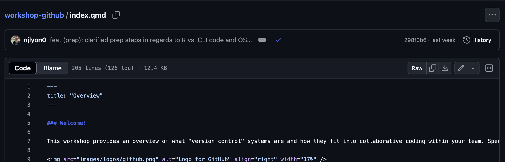
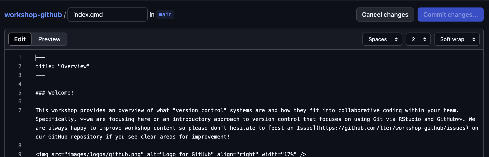
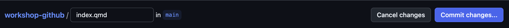
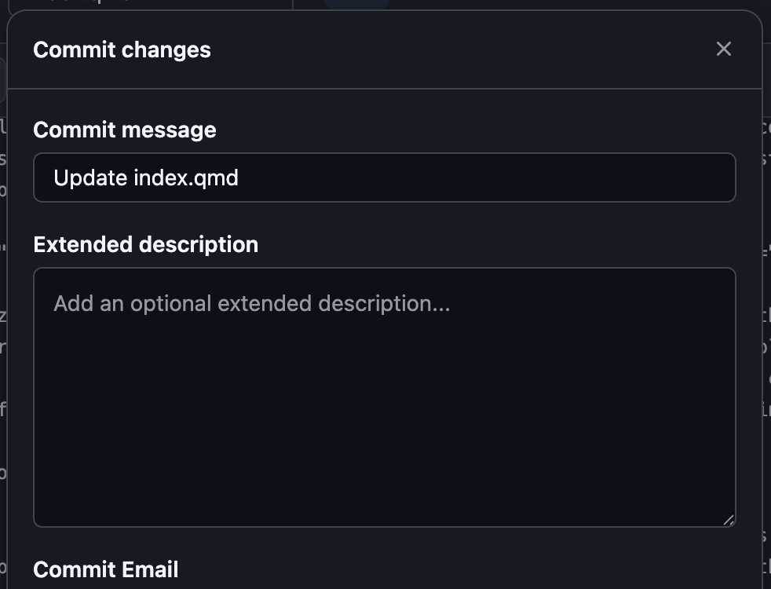

quarto previewEdit an Existing Website Through GitHub
Module Learning Objectives
By the end of this module, you will be able to:
- Use GitHub to edit an existing website
GitHub Editing Background
Once you’ve created and deployed a website some edits can actually be made directly through GitHub! There are some limitations to where this is possible as well as some drawbacks of editing via GitHub but the benefits of this approach can often outweigh the negatives. See below for more details.
See below for some of the primary benefits of editing websites through GitHub:
1. Edits to website do not require knowledge of RStudio and/or Git
This makes the barrier to entry for collaborators much lower than it would be for the code workflow developed by your group.
2. Edits can be implemented more quickly
For RStudio-Git experts this increase efficiency is reduced (because they are faster at navigating those steps) but for even intermediate RStudio users it is often faster to edit the website directly in this way.
See below for some of the primary weaknesses of editing websites through GitHub:
1. Can only edit one file at a time
As we will shortly demonstrate, GitHub only allows for editing a single file at a time. This is not always an issue but for changes that require editing two files it means that one of the edits is non-functional and may even cause a failure of the GitHub Action for updating the live website. For example adding a new image to the website would require (1) adding the image to GitHub and (2) embedding that image in the website.
2. Can’t preview changes
All of the previous modules in this workshop made extensive use of the quarto preview command so that changes to the website could be checked to make sure they work as desired. When editing directly through GitHub, there is no such feature and it is easy to make one-character typos that break either part of a page or the entire website.
3. Editing through GitHub does not work when code computation is needed
When the page to edit includes any code chunks, the edited page must be rendered locally (with the quarto render command) for the GitHub Action to succeed and the live site to be updated. So, making edits–even if they are not to the code chunks themselves–on pages that contain code chunks cannot be done successfully through GitHub alone. Note that you may edit one page in a website that includes code chunks so long as the specific page you are editing does not include code chunks.
If you edit a page through RStudio and running the quarto render command causes any changes to the _freeze/ folder, that page cannot be edited successfully through GitHub. Your intuition for such changes will improve as you work more with Quarto via RStudio and/or GitHub but keeping an eye out for whether the _freeze/ folder appears in RStudio’s “Git” pane is a good rule of thumb.
How to Edit Through GitHub
1. Find the Relevant .qmd on GitHub
On GitHub, find and click the name of the .qmd file you want to edit. In the example below we have clicked the file that builds the website homepage (index.qmd).

2. Start Editing
Once you have opened the file you want to edit, click the pencil icon just above and to the right of the file’s contents. This should open a slightly different interface that allows you to edit the file with a “Commit changes…” button (in the top right corner) grayed out until you make at least one change.

After you make any edits, the “Commit changes…” button will become click-able.

3. Commit Changes
Once you are done editing, you can commit your changes! Note that the top field is the ‘actual’ commit message and the “Extended description” will not be immediately apparent when people are looking at the commit history of this repository. We recommend replacing the default text in the first field with something more informative. You can of course include extended description if you want but that is not necessary.

The fields in the bottom of the pop-up menu (“Commit Email” and the radiobuttons for the branch) can be left at their default positions. Generally, if you wanted one of the non-default options for either of those you’d be making structural edits that are better suited for RStudio than GitHub directly so these options will likely never be something you need to engage with.
What About Pulling and Pushing?
Because you are editing directly in GitHub there is no pull/push step! Pulling is from GitHub and pushing is to GitHub so neither applies when you are already in GitHub.
4. Allow the GitHub Action to Complete
Wait a minute or two for the GitHub Action to complete and you should be able to revisit your website and see the new page! The process for the GitHub Action is the same as it was when you first deployed your site so you can either watch the symbol on the repository landing page or get more granular information in the “Actions” tab of the GitHub repository.
Site Not Updating? Refresh the Page!
If your site is not updating but you’ve followed the above steps (and the GitHub Action is finished), you might try closing the page and re-opening it or refreshing the page. Sometimes it takes a moment for updates to the site to be visible if you opened the page before the GitHub Action is complete or as it completes and refreshing the page can fix it in this case.
What to do if the GitHub Action Fails
If the GitHub Action (GHA) fails, it is likely that your edits required some additional computing that needed to be done locally. Fortunately, the solution here is straightforward.
1. Pull Changes
If the GHA failed after editing directly through GitHub it means that GitHub ‘knows’ about changes that are not present in your local clone of the repository! To prevent a merge conflict, simply pull down those changes however you normally would do that (typically either through RStudio’s Git pane or via the command line).
2. Preview Locally
Start a preview on your local machine to see if the site previews correctly. If the only cause of the failed GHA was that some computing was needed, the preview should succeed on your computer. If there is something else causing the failure, the preview will fail on your computer too. In this case, see if the error text in RStudio’s “Terminal” pane gives you any hint to which file is breaking the website and/or what the nature of the error is.
Remember that you can start a preview with an operating system-agnostic command line snippet.
Remember to End the Preview!
The preview will keep going until you manually stop it so be sure to stop it (by click the stop sign icon in the Terminal pane in RStudio) when you’re ready to move on.
3. Render the Website
Once you’re happy with how things look in the preview, completely render the website to make sure all of your most recent edits are reflected. You can do this with the following command line code.
quarto render4. Commit & Push!
Once you’ve done the preceding steps, Commit the following things:
- Any changes to
_freeze/ - Any changes to other files in the website needed to make the preview succeed
- If any
After you’ve committed these, push them up to the GitHub repository!